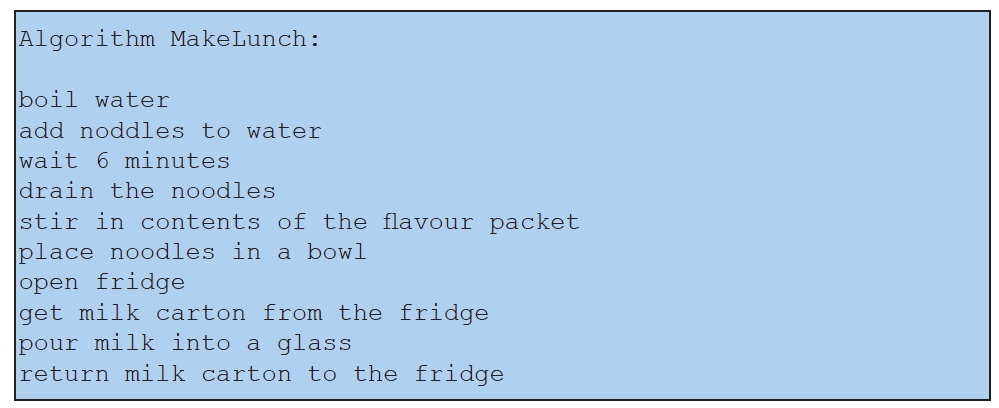
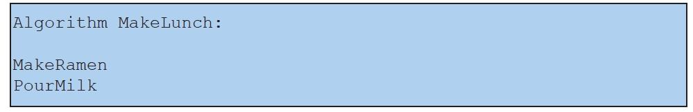
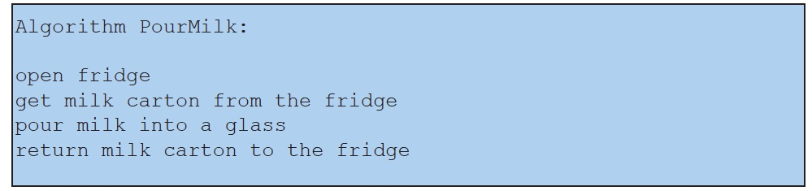

Encapsulation is a process in which several related actions are grouped and given a name. It is a tool that helps us break up tasks and temporarily hide detail, thus enabling effective abstraction. Without good encapsulation, it can be hard to grasp the high-level structure of an algorithm without getting lost in the details. For example, consider the following algorithm for making lunch:

It should be apparent that the first several actions in this algorithm come directly from the MakeRamen algorithm that we’ve seen before. Furthermore, the steps after making the ramen, while important to a delicious and low-cost student lunch, have nothing to do with making ramen. In other words, there is a natural break between high-level concepts in this algorithm. Employing encapsulation would allow us to see the overall organization of this lunch-making algorithm much more clearly, as follows:

It is not accidental that we’ve always given names to all of our sample algorithms so far. Now we can use that name to refer to the entire algorithm: we can think of the MakeLunch algorithm as consisting of three other encapsulated algorithms. The first of these is the MakeRamen algorithm that we’ve seen many times. The PourMilk algorithm is constructed simply by taking the details from our original MakeLunch algorithm and encapsulating them with a unique name.

Encapsulation can be useful when writing algorithms of any length, but it’s especially crucial for computer programs. Large-scale software can consist of thousands or even millions of lines of code. There’s no way anybody could make sense of it all if the code wasn’t encapsulated to break it up into manageable chunks.